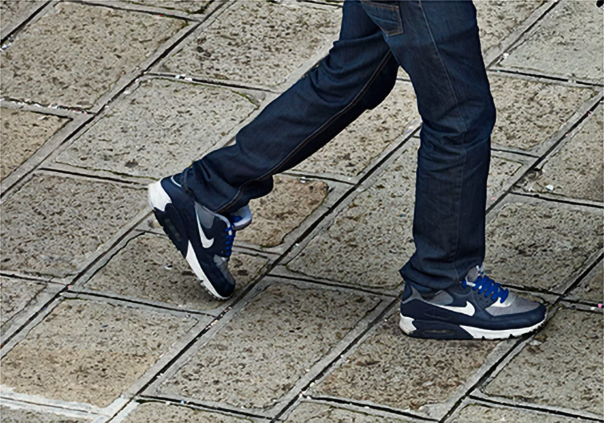
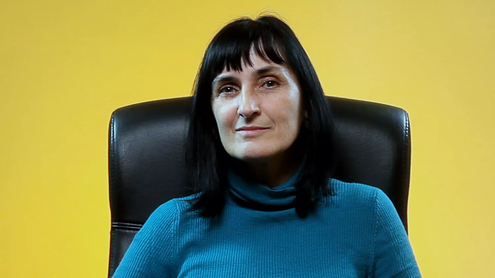

180°
FOMO + 180° = NFTs
Tòkens
No-Fungibles
NFT és l'acrònim de Non-Fungible Token, que podria
traduir-se com Penyora No-Fungible. Els NFTs són actius
digitals únics i inalterables que existeixen sobre una
blockchain
(cadena de blocs) i que no es gasten ni es poden fraccionar
ni duplicar.
Cadenes de blocs
Les
blockchains
són registres descentralitzats basats en tecnologia
criptogràfica que certifiquen la propietat i
característiques d'actius digitals criptogràfics com els
NFTs de forma transparent, segura i sense intermediaris.
Funcions i utilitats
Els NFTs permeten registrar i assegurar la singularitat,
propietat i verificabilitat d’elements molt diversos, des de
la identitat personal a la traçabilitat d'un producte, els
drets sobre un actiu físic, l'accés a un espai digital, la
governança d'una comunitat o la gestió d'un tresor compartit.
Comunitat FOMO
Els NFTs de 180° serveixen per accedir a les converses en
directe de conclusió dels debats FOMO en el fòrum. Serviran de
primer contacte fàcil amb la Web3 per qui no conegui
aquesta tecnologia i com a experiment per a construir una
comunitat global a la Web3 al voltant de les arts, la cultura
i la llengua catalanes.
Instruccions
Després de registrar-vos i rebre el correu de confirmació,
connecteu el moneder electrònic clicant sobre el botó 'Connect
Wallet' de la imatge que pertoqui al vostre perfil segons el
que hagueu indicat al registre. Un cop connectats, cliqueu
'Mint' i aproveu la transacció al vostre moneder. Si el
moneder no està connectat a la cadena de blocs Polygon el
mateix botó us avisarà per canviar la connexió. Si forgeu més
d'un NFT heu de fer-ho d'un en un. Tot el procés és gratuït i
no comporta cap despesa de gestió ni transacció pels usuaris.
Característiques i costos
Els NFTs de 180° es distribueixen de forma gratuïta, són
intransferibles, no tenen valor financer ni se’n pot fer ús
comercial o distribuir-los en mercats secundaris. Les imatges
associades als NFTs han estat cedides per l'autora només
per aquest ús i no es poden explotar ni reproduir de cap
altra manera sense el seu permís explícit, ja que en
conserva la propietat i els drets d'explotació. La despesa
energètica de forja de cada un d'aquests NFTs ronda els
0,002 kWh per unitat, equivalent al d’una transacció amb
targeta de crèdit.
Forja 180°
Podreu forjar els NFTs després de rebre la confirmació del registre, connectant el moneder a la cadena de blocs Polygon, clicant 'Mint' i aprovant la transacció.180°
180° és un pla general, la fotografia d’un carrer d'una ciutat. La imatge passa per diferents situacions: una sèrie de vídeos per un costat, 110 fotografies més petites, que apareixen en forma de llibre, fragments de la imatge inicial que explosiona i es divideix en parts. Cada fragment, aïllat, origina nous significats. Aquí, associats a una sèrie d'NFTs a través d'smartcontracts per identificar una comunitat cultural. Aquesta obra de Mabel Palacín va representar Catalunya i les Illes Balears a la 54a Biennal de Venècia de 2011.

180°
és una obra de Mabel Palacín que s’ocupa de temes com la
ciutat i la imatge, el punt de vista i la posició que
ocupa l’espectador, a través d’una fotografia que salta
d’un format a un altre, es fragmenta i es multiplica, en
aquest cas associada i fent visible una sèrie d'NFTs.
El projecte mostra aquest procés de transformació: la tensió d’una imatge contínuament reemmarcada i suspesa entre diversos suports a l’hora, confirmant la impossibilitat d’un enquadrament. A 180°, la imatge es reprodueix i tradueix a diferents suports que comporten relacions diferents de l’espectador amb la imatge. La presència dels múltiples punts de vista projecta incògnites al voltant de la imatge que anul·len qualsevol sentit únic i definitiu.
La instal·lació pren el nom de la regla cinematogràfica dels cent vuitanta graus, o la del salt d’eixos d’acció i de càmera, que diu que, quan es roden plans i contraplans, el punt de vista no ha de saltar mai aquesta línia imaginària per no generar confusió sobre la posició dels personatge en l’espai. Segons aquesta norma, la càmera ha d’escollir un costat a l’eix de l’acció, de tal manera que els personatges quedin ubicats en el mateix costat de la pantalla i l’espectador no es desorienti.
180° és un pla general, la fotografia d’un carrer en una ciutat. La imatge passa per diferents situacions: una sèrie de vídeos per un costat, 110 fotografies més petites, que apareixen en forma de llibre a la publicació, fragments de la imatge inicial que explosiona i es divideix en parts, cada fragment, aïllat, origina nous significats. Cada un dels vídeos, sorgits de la mateixa fotografia inicial, fragmenten la imatge i li apliquen una nova gramàtica, la de la imatge en moviment, que temporalitza la imatge. En el vídeo, el narrador és algú que observa i explica la imatge a través d’intertítols: la veu és alhora text i imatge. D’aquesta manera, la imatge es sotmet a un recorregut que desborda el seu propi espai per ser entregada a l’espectador.
180° va representar Catalunya i les Illes Balears a la 54a Biennal de Venècia de 2011 . Mabel Palacín ha cedit els drets d’algunes imatges de l’obra per a associar-los als NFTs que fan possible aquest experiment.
El projecte mostra aquest procés de transformació: la tensió d’una imatge contínuament reemmarcada i suspesa entre diversos suports a l’hora, confirmant la impossibilitat d’un enquadrament. A 180°, la imatge es reprodueix i tradueix a diferents suports que comporten relacions diferents de l’espectador amb la imatge. La presència dels múltiples punts de vista projecta incògnites al voltant de la imatge que anul·len qualsevol sentit únic i definitiu.
La instal·lació pren el nom de la regla cinematogràfica dels cent vuitanta graus, o la del salt d’eixos d’acció i de càmera, que diu que, quan es roden plans i contraplans, el punt de vista no ha de saltar mai aquesta línia imaginària per no generar confusió sobre la posició dels personatge en l’espai. Segons aquesta norma, la càmera ha d’escollir un costat a l’eix de l’acció, de tal manera que els personatges quedin ubicats en el mateix costat de la pantalla i l’espectador no es desorienti.
180° és un pla general, la fotografia d’un carrer en una ciutat. La imatge passa per diferents situacions: una sèrie de vídeos per un costat, 110 fotografies més petites, que apareixen en forma de llibre a la publicació, fragments de la imatge inicial que explosiona i es divideix en parts, cada fragment, aïllat, origina nous significats. Cada un dels vídeos, sorgits de la mateixa fotografia inicial, fragmenten la imatge i li apliquen una nova gramàtica, la de la imatge en moviment, que temporalitza la imatge. En el vídeo, el narrador és algú que observa i explica la imatge a través d’intertítols: la veu és alhora text i imatge. D’aquesta manera, la imatge es sotmet a un recorregut que desborda el seu propi espai per ser entregada a l’espectador.
180° va representar Catalunya i les Illes Balears a la 54a Biennal de Venècia de 2011 . Mabel Palacín ha cedit els drets d’algunes imatges de l’obra per a associar-los als NFTs que fan possible aquest experiment.

L'obra de
Mabel Palacín
(Barcelona, 1965)
és una recerca constant sobre les imatges, la fotografia
considerada en totes les seves mutacions, incloent el
cinema, el vídeo i les seves variants digitals. Considera
les imatges com a agents teòrics capaços de desenvolupar
models a partir dels quals entendre i eixamplar el
paisatge visual contemporani.
La noció de projecte és essencial en el seu mètode de treball, en el qual les imatges generen instruccions d'ús i engendren narracions sorgides de les mateixes imatges. El contingut de les imatges és sempre l'espectador, que se sent interpel·lat amb força per les dimensions espacials i la projecció múltiple, que estableixen vincles entre imatge i arquitectura.
L'any 2011 va representar Catalunya i les Illes Balears a la 54a Biennal de Venècia amb l'obra 180 graus. La seva obra s'ha vist en exposicions individuals i col·lectives a la Ángels Barcelona Gallery, Frankfurter Kunstverein i LA Galerie (Frankfurt), Centre d'Art Santa Mònica (Barcelona), The Agency (Londres), Norwich Gallery (Norwich), Transmission Gallery ( Glasgow), Kwangju Biennal (Corea del Sud), Artothek (Colònia), Taipei Fine Arts Museum (Taiwan), Kunstbunker Tumulka (Münich), Bolsky Gallery (Los Angeles), Galerie Anne de Villepoix (París), Künstlerhaus Bethanien (Berlín), MUA (Alacant), Museu Colecçao Berardo (Lisboa), Museu Salvador Dalí Sant Petersburg (Florida), Frac Languedoc-Roussillon (Montpeller), MACBA (Barcelona), OK Centre (Linz.), Casino Luxemburg (Luxemburg), Artium ( Vitòria), Museu d'Art de Reykjavík (Reykjavik) entre d'altres. Actualment resideix i desenvolupa el seu treball entre Barcelona i Milà.
Mabel Palacín ha cedit els drets d’alguns fragments de 180° per a associar-los als NFTs que fan possible aquest experiment.
La noció de projecte és essencial en el seu mètode de treball, en el qual les imatges generen instruccions d'ús i engendren narracions sorgides de les mateixes imatges. El contingut de les imatges és sempre l'espectador, que se sent interpel·lat amb força per les dimensions espacials i la projecció múltiple, que estableixen vincles entre imatge i arquitectura.
L'any 2011 va representar Catalunya i les Illes Balears a la 54a Biennal de Venècia amb l'obra 180 graus. La seva obra s'ha vist en exposicions individuals i col·lectives a la Ángels Barcelona Gallery, Frankfurter Kunstverein i LA Galerie (Frankfurt), Centre d'Art Santa Mònica (Barcelona), The Agency (Londres), Norwich Gallery (Norwich), Transmission Gallery ( Glasgow), Kwangju Biennal (Corea del Sud), Artothek (Colònia), Taipei Fine Arts Museum (Taiwan), Kunstbunker Tumulka (Münich), Bolsky Gallery (Los Angeles), Galerie Anne de Villepoix (París), Künstlerhaus Bethanien (Berlín), MUA (Alacant), Museu Colecçao Berardo (Lisboa), Museu Salvador Dalí Sant Petersburg (Florida), Frac Languedoc-Roussillon (Montpeller), MACBA (Barcelona), OK Centre (Linz.), Casino Luxemburg (Luxemburg), Artium ( Vitòria), Museu d'Art de Reykjavík (Reykjavik) entre d'altres. Actualment resideix i desenvolupa el seu treball entre Barcelona i Milà.
Mabel Palacín ha cedit els drets d’alguns fragments de 180° per a associar-los als NFTs que fan possible aquest experiment.